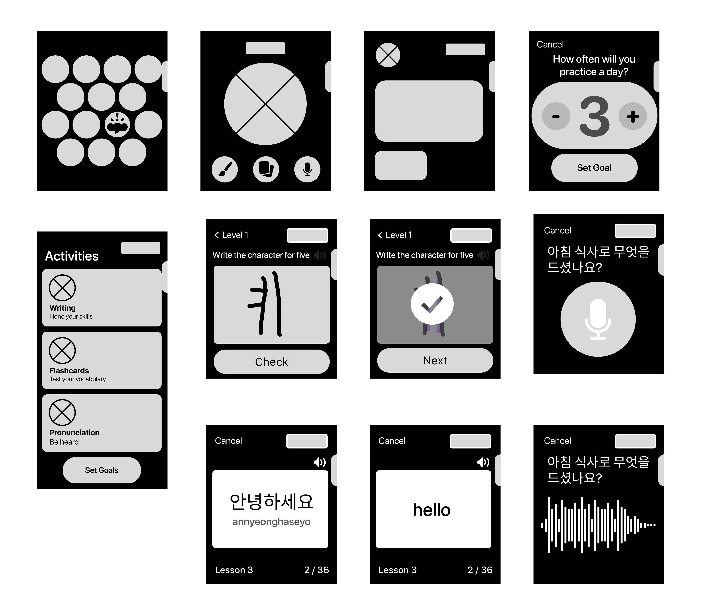

LINGOZILLA
Turn your spare moments into language mastery with Lingozilla, the language-learning Apple Watch app and your daily companion on your path to fluency.
THE PROBLEM
Learning a new language requires committed and consistent practice. However, few of us have time for the sit-down sessions this kind of learning often requires and need a convenient tool that seamlessly fits into their busy lives and enhances their language-learning journey.
THE SOLUTION
Easily accessible, wearable language learning app that minimizes distractions and provides quick, on-the-go practice.
MY ROLE
UX Researcher
UX/UI Designer
TEAM
Myself
Darius Appiah
Jin Chung
Erik Domnizky
Stephanie Lehnoff
TOOLS
Figma
Trello
Canva
Google Fonts
THE PROBLEM
Learning a new language requires committed and consistent practice. However, few of us have time for the sit-down sessions this kind of learning often requires and need a convenient tool that seamlessly fits into their busy lives and enhances their language-learning journey.
THE SOLUTION
Easily accessible, wearable language learning app that minimizes distractions and provides quick, on-the-go practice.
MY ROLE
UX Researcher
UX/UI Designer
TEAM
Myself
Darius Appiah
Jin Chung
Erik Domnizky
Stephanie Lehnoff
TOOLS
Figma
Trello
Canva
Google Fonts
RESEARCH
-
PROTO-PERSONA
We started by building an ideal user - someone who would benefit from a language learning wrist application. This persona guided our interview questions where we sought to prove or disprove our assumptions.
-
USER INTERVIEWS
We held five user interviews during which we inquired about individuals’ experiences with language apps and their potential interest in using such an app on a wearable device, like an Apple Watch.
We found that users were, more often than expected, without their phones, easily distracted by other applications, and preferred short, quick, on-the-go language sessions.
DEFINE
-
KEY USER INSIGHTS
- Users want a practicing solution that fits their schedules.
- Conversation and immersion are integral to their learning process.
- Practicing language skills should be fun and engaging.
-
AFFINITY DIAGRAM
We gathered all the facts/thoughts/and ideas gained from user interviews and organized them into actional sections: "Likes," "Needs & Goals," and "Pain Points." "Likes" we would work to maintain on the redesigned site. "Needs & Goals" provided usable objectives, and "Pain Points" were issues that needed resolution.

-
SURVEY
To help build our understanding of the market, we conducted a simple survey using Google Forms. We found that there is a strong preference for learning a language for future travel.
-
USER PERSONA
Gathering and defining these insights and viewing them through our problem statement allowed us to understand better who our user is, our User Persona.

-
PROBLEM STATEMENT
Lingozilla, the language learning app on the go, is grappling with the challenge of engaging users and ensuring they stay committed to improving their language skills.
-
VALUE PROPOSITION
With one tap, immerse yourself in interactive lessons, quizzes, and pronunciation guides. Lingozilla offers a seamless learning experience and personalized progress tracking for your favorite language.
-
COMPETITOR ANALYSIS
For our competitive analysis, we reviewed two language apps, Duolingo and Babbel, and one learning app, Quizlet. We looked into these apps' delivery of learning material, interaction design, gamification strategy, and more.

-
UI HEURISTICS
We worked to find a competing application that we could measure against. LingoTime is a language learning application that also works on your smartwatch. We annotated some things we liked and could take inspiration from during the ideation phase. However, there were issues with the application that we noted, including small, difficult-to-read text, small buttons, touch targets, and a lack of any real knowledge check.

- Streak tracking keeps users engaged on a daily basis
- User can search for a word and app returns common phrases that use the word
- Variety of lesson types
- Use of color to represent different lessons
- Text is very small and hard to read on a watch screen
- Buttons are very small and feel out of place/poorly aligned on the screen. Clicking the "X" or "check mark" buttons do the same thing as swiping left or right. Multiple options for completing the same action can lead to user confusion.
- Character animation is confusing. No real knowledge check- the user just swipes left or right if they know the character or not.
IDEATE
-
I LIKE, I WISH, WHAT IF
In the ideation phase, we started brainstorming potential features and functions of our app, beginning with an "I Like, I Wish, What If" diagram. On each card is a feature that we or our research subjects appreciated when learning a language as well as anything that enhances or might enhance the learning process.

-
FEATURE PRIORITIZATION
Next, we used the MoSCoW Method to prioritize our ideas/features based on user needs and feasibility of implementation.

-
STORYBOARD
We created a storyboard detailing a hypothetical target user’s learning frustrations, discovery of Lingozilla, use of the app, and finally, learning success thanks to Lingozilla.
.png)
-
MOOD BOARD
When creating the mood board, we examined and documented how other Apple Watch apps implemented features like writing, speech, card flips, and progress tracking. We also added styling inspiration. This step helped us better understand Apple Watch design standards and best practices before actually designing Lingozilla.

-
STYLEGUIDE
Armed with design inspiration, we created a style guide featuring a color palette, buttons, icons, and more. Due to the small screen size of an Apple Watch, Apple has fairly strict design guidelines which we made sure to follow (such as SF Pro font and standard button sizes).

-
USER FLOW
In our user flow, we designed an app architecture that best allowed the user to navigate through the app's features and activites.

-
SKETCHES
Sketching wireframes proved to be incredibly valuable because it helped us make decisions about what to put on each screen and expand on our user flow, working through the specific actions the user would take throughout each activity.

PROTOTYPE
-
WIREFRAMES
Apple Watch App
After working through the information layout and screen scketches, we started building the frames in Figmma.

iOS Companion App
The Lingozilla watch app was designed to compliment a mobile app. This mobile app offers an expanded view of the watch app and provides easy account creation and personalization. All activities can be played on both the mobile and watch Lingozilla apps. While our project focused on building-out the watch prototype, we designed three pages of the mobile app as a starting point for further project development.

Product Page (Web)
Additionally, we designed a product page for web users to easily learn about the application before download. This web page is designed to highlight Lingozilla's convenience and effective learning tools.

-
LO-FI PROTOTYPE
Linking our watch wireframes together provided us with the ability to test our own workflows and provided us with a helpful artifact to use in usability testing.
.png)
-
USABILITY TESTING
Through four usability tests, we learned a lot about how users viewed and interacted with our application. We discovered that users had trouble using the Apple Watch prototype without access to the Digital Crown or other buttons that are deeply integrated with the device itself. For the best possible data, we would need to build a skeleton application in XCode and run it on a demo device.
In the meantime, we received the following valuable feedback:
- The user needed more clarity on how to return to the homepage and expected the “cancel” button to take them back to the homepage.
- The user could not find the homepage after completing the task. They had trouble tapping cancel or the virtual Digital Crown to return.
- Icons on the Streak view were unclear on what they represented, though the activities page was clearer. They suggested we just keep that page and remove the earlier icons.
FINAL OUTPUT
-
WATCH & MOBILE PROTOTYPES
We applied some of this feedback directly to our Hi-Fi materials, though there were times when feedback was at odds with other usability results. In those cases, careful thought was needed to decide what elements should be amended or stay as they were. We created a complete Apple Watch app prototype and a smaller clickable sketch of a companion app that resides on iOS.
Watch App Prototype
Mobile Prototype -
PRODUCT PAGE
The product page was written using Bootstrap 5 to provide basic columns and responsive features. Additional typefaces, adjusted CSS, and scripts were added to the page as well. Figma was used in conjunction with Shots.so to create assets for the page. We were careful to check color accessibility and provide alt-text whenever images were used.
GitHub Respository
Live Product Page
NEXT STEPS
-
Although the functionality of the Apple Watch as a learning platform is limited, we see great potential for it to serve as a branch-off device for the iPhone or (in the future) Apple Vision Pro. Potential next steps would focus on expanding the iOS application and building a properly coded demo that would run on a real Apple Watch to test against.